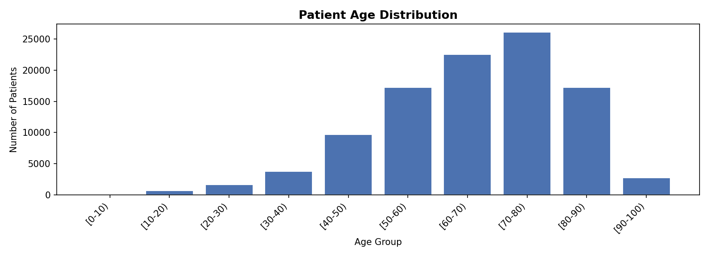
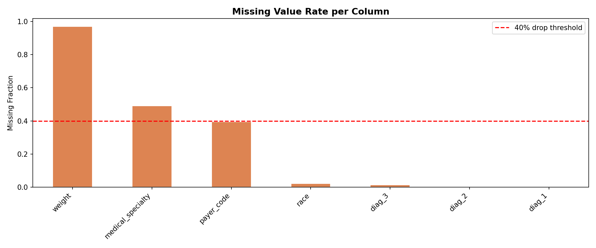
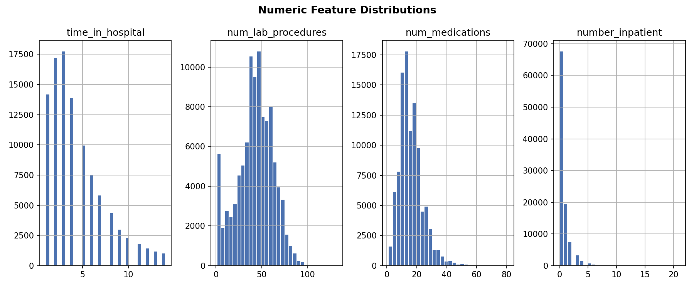
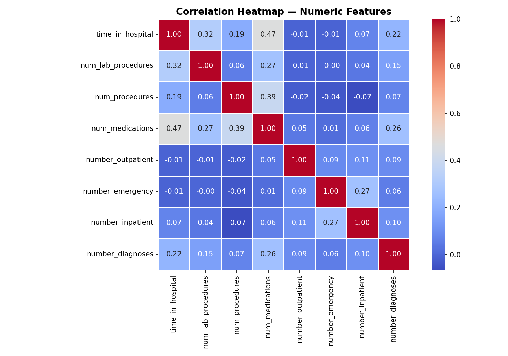

03 · Exploratory Analysis
Interactive Visualizations

📊 PATIENT AGE DISTRIBUTION — The dataset skews heavily toward older patients, with the [70-80] age group forming the largest cohort (~26,000 patients). This reflects diabetes prevalence in elderly populations and informs model bias considerations.

🔴 MISSING VALUE RATE PER COLUMN — Weight (97% missing) and medical_specialty (49%) were dropped or imputed. A 40% threshold line guided feature retention decisions, ensuring data quality before modeling.

📈 NUMERIC FEATURE DISTRIBUTIONS — time_in_hospital shows a right-skewed distribution peaking at 1-3 days. num_lab_procedures follows a near-normal distribution centered at ~45. num_medications peaks around 14-16. number_inpatient is heavily zero-inflated.

🌡 CORRELATION HEATMAP — Strongest positive correlations: num_medications ↔ time_in_hospital (0.47), num_procedures ↔ num_medications (0.39). Emergency and inpatient visits correlate moderately (0.27). Most features show weak inter-correlation, suggesting diverse predictive signal.

🤖 MODEL COMPARISON — Logistic Regression and Random Forest tie on most metrics (Accuracy ~66%, F1 ~71%, Precision ~79%). Decision Tree underperforms significantly. LR and RF both show AUC-ROC ~0.59, indicating class imbalance remains a challenge.

⚡ SCALABILITY ANALYSIS — Random Forest training time scales near-linearly from 7.74s (25% = 22,903 rows) to 9.76s (100% = 91,560 rows). Excellent scalability for a full ensemble model, showing sub-linear growth relative to data volume.